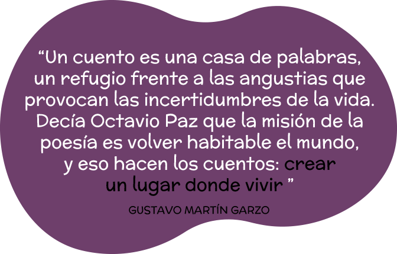

Otras Formas de Contar
Papel, juguetes y objetos
Brinda la posibilidad de representar grandes eventos de una historia en diminutos escenarios. Por su estructura y formato visual en pequeñas dimensiones permite abordar gran variedad de textos literarios; el ritmo narrativo es ágil, mantiene estrecha relación entre la animación y la narrativa visual.
Susurradores
Despacito como brisa de mar, un cuento un poema o una historia sin atar a tu oído hare llegar.
Un susurrador es un tubo de cartón, un extremo es colocado en la oreja del oyente y por el otro extremo el narrador comienza a relatar historias, poemas, etc.
Pequeños Universos Portátiles
Un paraguas o sombrilla se convierte en un espacio mágico donde la historia se comparte para generar una mirada o un lazo poético entre el narrador y los oyentes.
